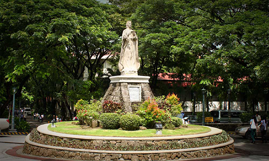

De La Salle University-Dasmariñas (DLSU-D) is a leading Catholic educational institution in Southern
Luzon, known for its commitment to academic excellence, environmental stewardship, and social
transformation. As part of the global Lasallian network, DLSU-D nurtures learners to become
competent, compassionate, and responsible individuals ready to make a difference in society.
Nestled in a peaceful and eco-friendly campus in Dasmariñas City, Cavite, DLSU-D offers a vibrant
learning environment where innovation meets tradition. With a strong emphasis on quality education
and community involvement, the university continues to shape future leaders and changemakers
grounded in faith, service, and integrity.

Our Mission
To champion the Human and Christian Education of lifelong learners who value history and culture through responsive and inclusive academic, research, and extension programs.
Our Vision
A leading Catholic University that inspires excellence and drives innovation towards a just, peaceful, and sustainable society.
Our Identity
DLSU-D - inspired by the charism of St. John Baptist De La Salle - is a Catholic Lasallian Institution of learning, committed to provide a human and Christian Education to the young, especially the poor and the marginalized.
From its origins as De La Salle University-Emilio Aguinaldo College until its evolution to Cavite's premiere university, learn about the history of De La Salle University-Dasmariñas through this video produced by the Strategic Communications Office.